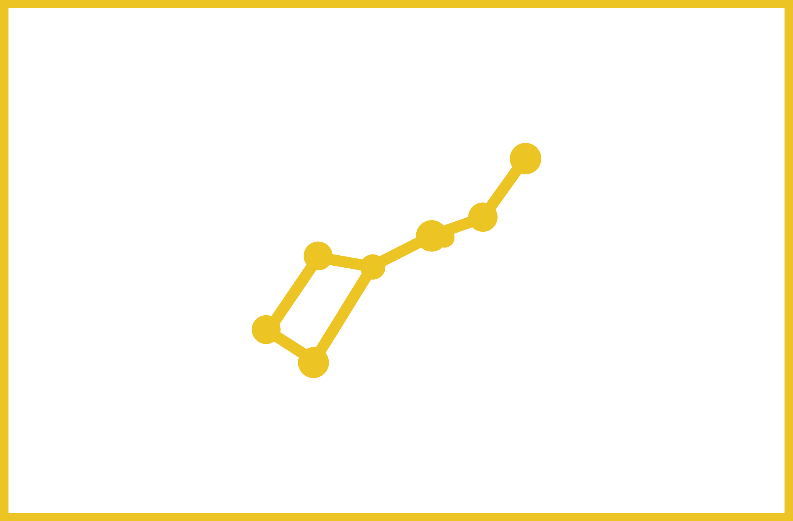
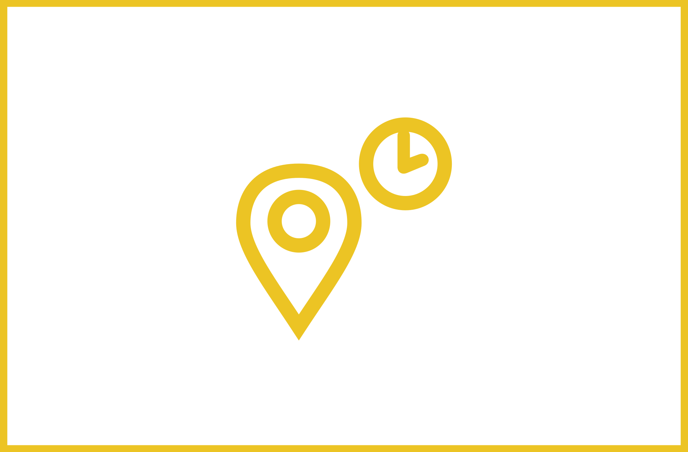
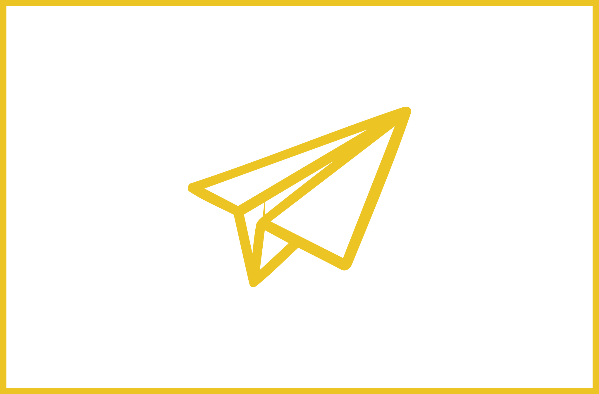

Lazeris tiksliai išpjausto žvaigždes ant tamsaus 300 g/km.m. storio popieriaus, o baltos spalvos pagrindas išryškina ir pabrėžia žemėlapo reljefa, pjovimo linijas.
PERSONALIZUOTAS ŽVAIGŽDĖLAPIS


Kiekvienas žvaigždėlapis suasmenintas pagal vietą, datą, valandą ir žymį jums svarbiausią gyvenimo įvykį – nesvarbu ar tai būtų kūdikio gimimas, vestuvės ar įkurtuvės naujuose namuose.

Praktiškas žvaigždėlapio dydis – 30x40 cm. Nesudėtinga surasti rėmelį.

Siuntimas Lietuvoje – nemokamas.